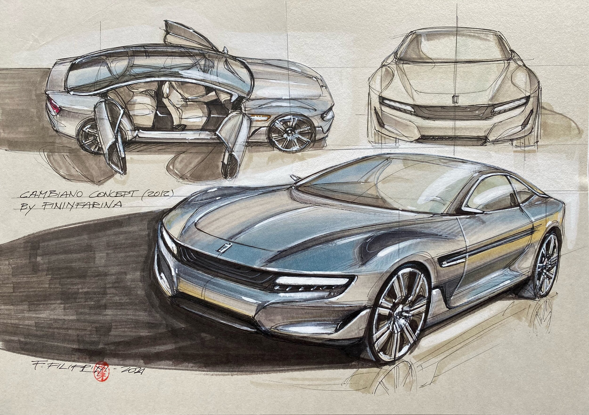
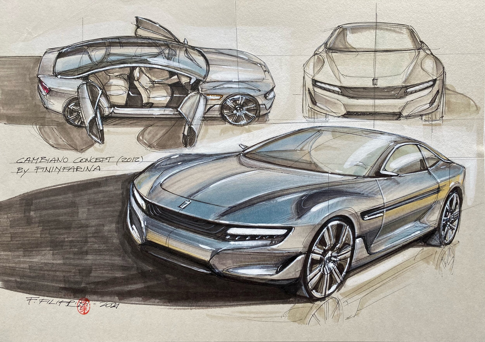

About Me
I am interested in many things such as:

I found that drawing is an activity that canlive up my imagination.
I draw anything that I can imagine.
I have join several competition in drawing before.
I found that technologies keeps improving years by years.
As they keep improving, they have many new features.
Although I actually can't afford the tech,
I watch the hands on and review about the tech on YouTube.


Biodata
| Name | Tuan Muhammad Idris Irfan bin Tuan Mohd Azahar |
| Age | 20 years old |
| Country | Malaysia |
| Born | Kajang, Selangor |
| Hometown | Melaka Pindah, Alor Gajah |
| Course | Diploma in Computer Science and Mathematics UiTM Cawangan Melaka Kampus Jasin |
Academic Background
| Primary | Sekolah Kebangsaan Melaka Pindah |
| Secondary | Sekolah Berasrama Penuh Integrasi Selandar |
| College | UiTM Cawangan Melaka Kampus Jasin Faculty: Faculty of Computer and Mathematical Sciences Programme: Diploma in Computer Science and Mathematics (CS110) Group: M3CS1104C Related Subject: Introduction To Web And Mobile Application (CSC264) |
Interest
I am interested in many things such as:

1. Drawing
I found that drawing is an activity that canlive up my imagination.
I draw anything that I can imagine.
I have join several competition in drawing before.
2. Technologies
I found that technologies keeps improving years by years.
As they keep improving, they have many new features.
Although I actually can't afford the tech,
I watch the hands on and review about the tech on YouTube.
Learning Objectives
1. Build a website using HTML, JavaScript and server-side scripts.
2. Learn the basics of web development, such as mark-up language, client-side scripting and server-side scripting.
3. Apply the learned concepts to real-world examples of web development.